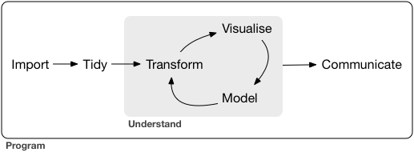
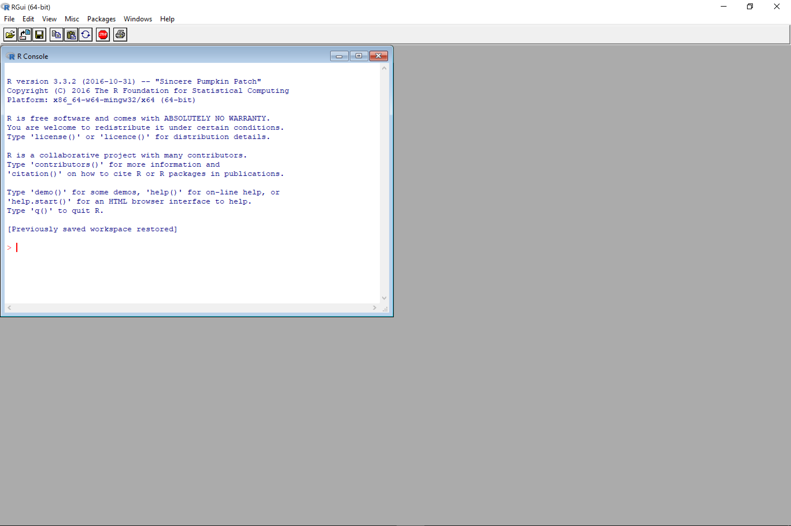
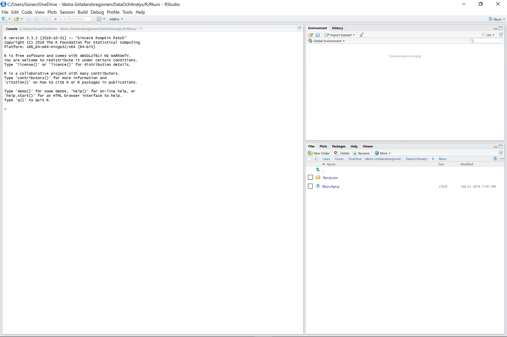

Kurskompendium - introduktion till R
1 Introduktion
Denna introduktionskurs syftar till att få den ovana R-användaren att bli hyggligt bekväm med att hantera de viktigaste verktygen i R och i det modernare gränssnittet Rstudio.
Kursen bygger på Hadley Wickham´s bok R for Data Science som också finns tillgänglig på internet (https://r4ds.had.co.nz/index.html). I själva verket följer innehållet i kursen ganska slaviskt Wickham´s bok. Motivet är att HW har varit en drivkraft bakom att utveckla det från början tämligen svåröverskådliga och inkonsistenta programspråket till ett mer konsistent och därmed sänkt inlärningströskeln. Det har han gjort genom att utveckla och modifiera programmeringsspråket samt utvecklat en rad packages för att hantera data på ett effektivare och möjligen modernare sätt än tidigare.

Man kan beskriva datahantering och -analys som en process som omfattar
- Importera data
- Rensa data
- Transformera data till ändamålsenliga arbets-data - reproducerbarhet!
- Visualisera, utforska data för överblick och förståelse
- Modellera data
- Och något om hjälpmedel för att kommunicera resultaten
Del 1-3 handlar om att importera och manipulera data så att det blir möjligt att analysera dem. Del 3-5 syftar till att få en överblick och förstå datamängden och hur olika komponenter hänger samman med varandra. Del 6 handlar om att kommunicera resultaten från analysen.
Vi kommer att beröra samtliga delar mer och mindre. I ett första avsnitt dyker vi in i del 3-5 för att snabbt komma in i programmeringsspråket och känna på olika verktyg för visualisering, modellering och transformering av data. Det andra avsnittet behandlar del 1-3 och brottas då med verktyg för att anpassa rådata till arbets-data och i det tredje avsnittet behandlas verktyg för att kommunicera resultaten.
Men först lite basal R/RStudio-hantering.
1.1 Basics
I detta avsnitt ska vi väldigt översiktligt nosa på R-konsolen som självständigt program och använda det som en kalkylator. Därefter ska vi bekanta oss med RStudio och börja uppskatta finessen med att ha ett separat gränsnitt. Vi ska även titta på några olika sätt att få hjälp när du kör fast – för det kommer du att göra.
1.2 R-konsolen
R fungerar som ett självständigt program och man kan i princip göra alla beräkningar och bearbetningar direkt i programmets eget gränssnitt – konsolen. I det här avsnittet ska vi bekanta oss översiktligt med konsolen.
Starta upp R. nedanstående skärmbild kommer upp. I konsolen ses en standardtext som visar vilken version av R som körs, en deklaration om R samt några tips om hjälp-funktioner.

Menyraden innehåller sedvanliga funktioner och länkar. Vi ska inte gå igenom dessa utan bara känna på hur det är att arbeta i detta gränssnitt. Låt oss börja med att titta på några inbyggda R-demon. Skriv
demo()
vid prompten (>) och tryck ENTER. Då kommer en ”output”-skärm fram vilken visar vilka tillgängliga demon som finns. Låt oss titta på några exempel på R:s grafiska möjligheter. Det gör man genom att ange demo(graphics). Det kan man förstås skriva ut men ett smartare sätt är att unyttja att R håller reda på tidigare kommandon och genom att istället trycka ”uppåt"-pilen på tangentbordet kommer det senaste kommandot att synas på skärmen. Med hjälp av vänsterpilen flyttar du markören innanför parentesen och skriver graphics så att kommandot nu är
demo(graphics)
Tryck ENTER. I konsolen ses nu en bekräftelse på att R har laddat grafik-demot. Tryck ENTER en gång till för att köra igång demot. Då förbereds R genom att ladda in nödvändiga packeages och data-set. Längst ner står ”Waiting to confirm page change…”. R är redo att visa olika grafiska outputs. Högst upp på output-skärmen uppmanas vi att trycka ENTER för att bekräfta fortsättningen. Då vi gör det visas ett nytt diagram för varje gång ENTER trycks ned. I konsolen visas den syntax R använt för att framställa diagrammen. Efter ett antal ENTER händer inget mer. Vi har nått slutet på demon och det markeras på konsolen genom att prompten (>) nu blivit röd. R är nu redo för nya kommandon.
Låt oss använda R som en kalkylator. Man skriver då in de beräkningar mnan vill utföra och trycker ENTER. Till exempel:
även om R-konsolen är fullt funktionell är användningen en mödosam process, speciellt då man använder mer komplexa script för sina sessioner. Det blir mycket tangent-tryckningar och ofta omständligt att felsöka scripten man jobbar med. Därför bör man använda något av de modernare gränssnitt som utvecklats. Det kanske mest använda är RStudio, vilket vi nu går över till. Skriv
q()
i konsolen, tryck ENTER och välj att inte spara. Tryck OK.
1.3 RStudio
RStudio är en ingegrerad utvecklingsmiljö (IDE, integrated development environment) för R programmering. När du öppnar programmet möts du av två dominerande ytor, konsolen och resultat-ytan nere till höger (console och output).

Konsolen är identisk med gränssnittet i det nativa R-gränssnittet som vi nosade på ovan.
Innan vi börjar laborera med RStudio behöver vi emellertid installera en modul, eller ett paket (package), som innehåller funktioner, data och dokumentation nödvändiga för att genomföra kursen. Sådana paket (packages) utgör en viktig del av den breda funktionaliteten i R och vi ska komma tillbaka till dessa lite senare. Men för nu nöjer vi oss med att installera en modul som heter tidyverse och är egentligen en samling av andra moduler för att förenkla och effektivisera datahanteringen.
Det finns ett par olika sätt att installera en modul som tidyverse. För tillfället ska vi installera tidyverse med en enkel rad med kod. I konsolen skriv
install.packages(”tidyverse”)
och tryck ENTER.
Tidyverse är en samling moduler vilka bygger på samma konsistenta programlogik och utnyttjar kapaciteten i R optimalt för att hantera data. För kursen täcker tidyverse behovet av moduler som inte finns med i basversionen av R. Nästan. Vi ska ladda ned ytterligare tre moduler som innehåller data till övningsexemplen längre fram. Så på samma sätt som tidigare, skriv
install.packages(c("nycflights13", "gapminder", "Lahman"))
Och tryck ENTER.
Dessa moduler innhåller data över flygtrafik, global utveckling och baseball-data.
1.4 Hjälpfunktioner
R och RStudio innehåller flera inbyggda möjligheter att få hjälp när man kör fast, vilket inte sällan blir fallet. Förutom dessa måste nämnas möjligheten att googla fram en lösning på problemet. Det kan gälla alltifrån tämligen ospecifika frågor om t.ex. en viss funktion till att förstå vad ett felmeddelande betyder. Att kombinera sökfrasen med ”R” räcker i allmänhet för att resultatet ska vara tillräckligt R-specifikt. Google är förvånansvärt effektivt för att få klarhet i just felmeddelanden vilka ofta är ganska kryptiska.
Om Google inte ger svaret bör man försöka med Stackoverflow (http://stackoverflow.com/) och i sökfrasen inkludera [R] för att begränsa sökningen till R-specifika svar.